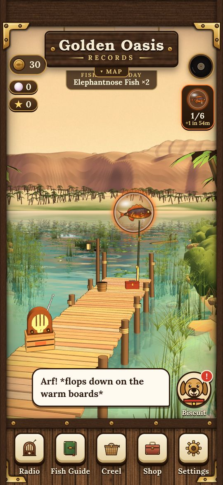
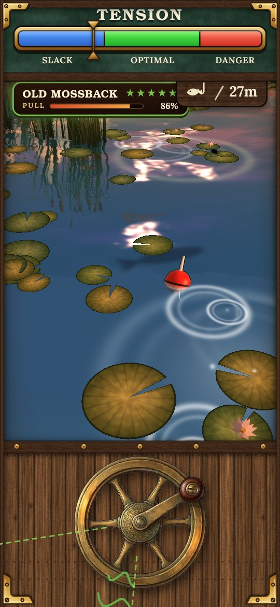

NiBi
NiBi Pond Reels
A cozy fishing game about a quiet dock, a brass reel and four lakes full of fish.




Cast from a sleepy dock, turn a brass reel you can feel in your hands, and fish four beautiful lakes. Every fish fights in its own way, old records turn up in waterproof sleeves, and a legendary boss lurks in every lake.
Visit Barnaby Bramble's tackle shop to upgrade your gear and decorate the place, open new lakes with Angler Club tickets, and tune the dock radio to your favourite station.
- Four lakes and 60 fish to discover
- A tactile brass reel with real haptic feedback
- Four boss fish with their own attacks
- Legendary fish with moves of their own
- A dock radio with lake stations and vintage records
- Plays offline — no accounts, no tracking